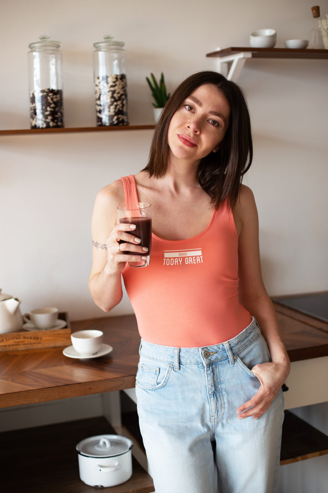

Лекарства
Могут быть необходимы и назначаются врачом. Если после курса симптомы вернулись, это повод обсудить дальнейший план с лечащим врачом, а не отменять лечение самостоятельно.
Восточная медицина · индивидуальное сопровождение · 1–2 месяца
Восстановите комфорт после еды — даже если кажется, что вы уже всё перепробовали.
Персональная схема питания и традиционных сборов, ежедневная связь со мной и корректировки по ходу работы. Начнём с разговора о вашей ситуации.
Записаться на бесплатную диагностику
Модуль 01 / О чём вы можете говорить на диагностике
Почему прежние попытки не дали устойчивого эффекта
Если один подход не помог, это не делает ваш опыт «неправильным». Причины похожих симптомов бывают разными — от режима питания до состояний, которые требуют врачебной диагностики.
Во время первой встречи мы разберём, что уже пробовали, как менялось самочувствие и какие обследования есть. Я объясню, где может помочь работа с питанием, а где нужно сначала обратиться к врачу.
Могут быть необходимы и назначаются врачом. Если после курса симптомы вернулись, это повод обсудить дальнейший план с лечащим врачом, а не отменять лечение самостоятельно.
Могут не решить вашу задачу, если неясно, для чего они нужны. Добавки стоит подбирать по показаниям, а не вместо выяснения причины жалоб.
То, что подходит одному человеку, другому может усиливать дискомфорт. Рацион имеет смысл адаптировать к самочувствию и подтверждённым ограничениям.
 Не универсальная диета.
Не универсальная диета.Модуль 02 / Подход
Представьте плиту: если под кастрюлей слабый огонь, даже хорошим продуктам нужно больше времени, чтобы приготовиться. В восточной медицине эту метафору используют, чтобы говорить о питании и ощущениях после еды.
Я изучаю ваш режим, реакцию на продукты, привычки и историю симптомов. Затем подбираю питание и, если это уместно, традиционные сборы с учётом противопоказаний и принимаемых препаратов.
Моя история

Личный опыт стал началом профессионального пути.Много лет назад я сама искала ответ на вопросы, которые теперь слышу от клиенток: почему после еды тяжело, почему обследования не дают ясности и с чего вообще начинать.
Я обращалась к врачам и пробовала разные подходы. Позже познакомилась с восточной медициной и заметила улучшение самочувствия. Этот опыт стал началом моего профессионального пути — не заменой медицине, а причиной глубже изучить питание и индивидуальную работу.
Сегодня я работаю с женщинами, которым важно не получить ещё один список запретов, а понять собственные реакции и выстроить посильную систему на каждый день.
Модуль 03 / Формат работы
Личная работа — это не файл с рекомендациями. Я остаюсь на связи, наблюдаю динамику и корректирую схему вместе с вами.
Бесплатная встреча на 30–40 минут: симптомы, история, обследования и честный разговор о том, могу ли я быть вам полезна.
Смотрим имеющиеся анализы. Дополнительные обследования — только по показаниям и через вашего врача.
Подбираю рекомендации по питанию. Если уместно, обсуждаем традиционные сборы и их совместимость с вашим лечением.
Вы рассказываете, что ели и как себя чувствовали. Мы вносим изменения по фактической реакции, а не следуем жёсткому шаблону.
Фиксируем выраженность симптомов по шкале и сравниваем изменения. Сроки и результат индивидуальны.
Модуль 04 / Из практики
Рассказы клиенток о собственном опыте. Сроки и изменения у каждого человека разные; истории не гарантируют аналогичный результат.
Годы нерегулярного стула, вздутие и сухость во рту. По её словам, пробовала разные средства, включая слабительные.
На второй неделе сообщила о ежедневном комфортном стуле. Через год — об устойчивом улучшении и снижении веса на 8 кг; показанные ею печёночные показатели и холестерин были в пределах нормы.
Несколько лет изжоги и рефлюкса, вздутие. Принимала омепразол и беспокоилась о давлении.
Через месяц сообщила, что изжога перестала беспокоить, питание стало разнообразнее, стул нормализовался. По её словам, давление и показатели ферментов были в порядке.
Три года жидкого стула. Рассказывала, что не выходила из дома без лекарства и была вынуждена оставить работу.
На второй неделе заметила изменения стула. Через месяц сообщила о нормализации, а позднее — о возвращении к тай-чи, друзьям и работе.
Истории изложены со слов клиенток. Медикаменты нельзя отменять без согласования с лечащим врачом.
Модуль 05 / Личная работа
Индивидуальное сопровождение с ежедневной связью, планом питания и корректировками по ходу работы. Обычный срок — один-два месяца; конкретная продолжительность зависит от вашей ситуации.
Традиционные сборы приобретаются отдельно, ориентир — 5–7 тыс. ₽ в месяц. Условия рассрочки обсуждаем до оформления.
Первые семь дней
Если поймёте, что формат вам не подходит, я верну оплату полностью.
Модуль 06 / Другой способ познакомиться с подходом
«Умный детокс» — самостоятельная программа питания по принципам восточной медицины. В материалах: уроки, рецепты по системе «пяти элементов» и списки продуктов.
Она не заменяет личное сопровождение: здесь вы разбираетесь с основами самостоятельно, без индивидуальной схемы и ежедневных корректировок.
Модуль 07 / Перед началом
Если вашего вопроса здесь нет, обсудим его лично на бесплатной встрече.
Нет. На первой встрече разберём то, что у вас уже есть. Если понадобятся дополнительные обследования, обсудим их с вашим врачом.
Важно назвать все принимаемые препараты и заболевания. Традиционные сборы могут иметь противопоказания и взаимодействия; любые изменения назначенного лечения согласуются с лечащим врачом.
Мы учитываем ваш реальный график. Рацион можно собирать из доступных продуктов и заранее готовить блюда с собой.
Диагностика помогает понять, подойдёт ли моя работа или лучше обратиться к профильному врачу. Я честно скажу, если не смогу помочь.
Возможность рассрочки обсуждаем на диагностике. Вы заранее узнаете действующие условия и итоговую стоимость.
Модуль 08 / Первый шаг
На бесплатной встрече вы расскажете о симптомах, привычках и том, что уже пробовали. Я помогу наметить следующие шаги и честно скажу, подходит ли вам моя работа.
Оставьте контакты для связи. Отправка заявки появится здесь после подключения канала приёма заявок.